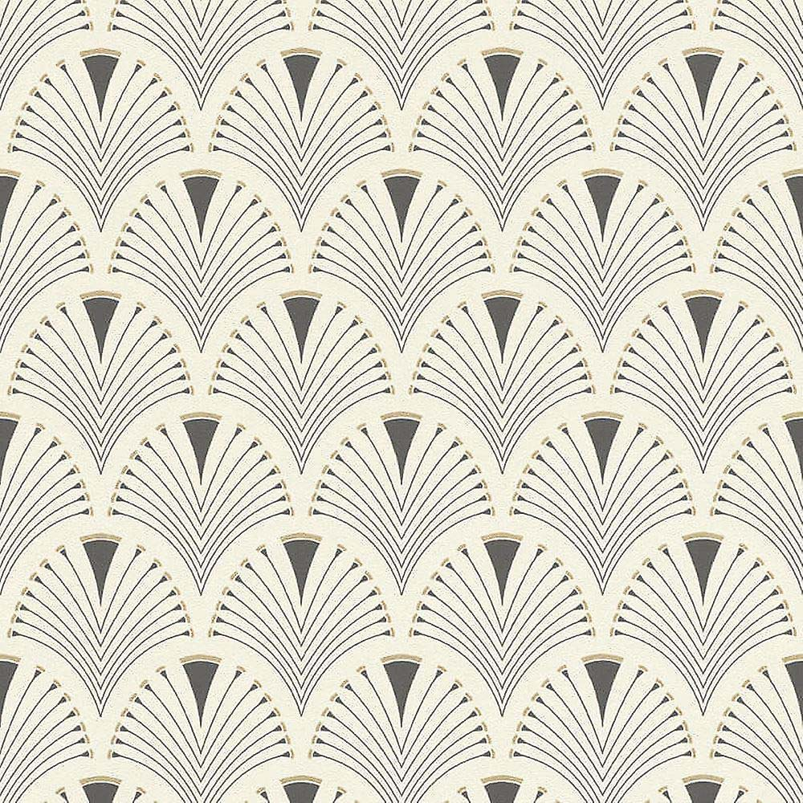
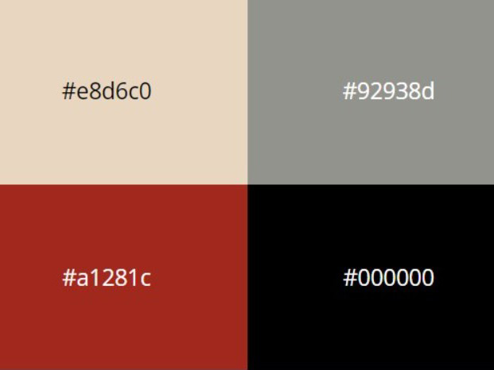
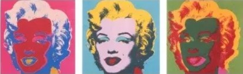

Why did we chose these themes?
The disrespect of men lead us here.
From a God punishment, to human exploitments, to extremes and excess, passing through a chess game against humanity, to humanity not believing anything anymore. Wait, Aliens have invaded us. Run!
Discover our Text;Gate journey!
The Black Plauge
1348
Introduction:
Latin Yersinia pestis, it was the 1348 Plague that hit Florence, resulting in the death of 3/5 of the population: tens of thousands of humans.
This epidemy spreads out fast and social conditions soon became cruel: some, scared to death, avoided the infected, others help them finding a cure.
People abandoned family and friends, stopped working, fled cities and shut themselves off from the world. Some felt that the wrath of God was descending upon humanity, so they prayed for Him.
Read this poem of the 17th century describing the scared and scary stereotypical Plague Doctors
As may be seen on picture here, “In Rome the doctors do appear, When to their patients they are called, In places by the plague appalled, Their hats and cloaks, of fashion new, Are made of oilcloth, dark of hue, Their caps with glasses are designed, Their bills with antidotes all lined, That foulsome air may do no harm, Nor cause the doctor man alarm, The staff in hand must serve to show Their noble trade where'er they go Poem of the 17th century.”
A simple batterium called Coccobacilius formed this terrifying social experiment leading people to totally lose control.

One of the witnesses of the Black Death was Boccaccio: an italian writer and real life testimony of the Black Death in Florence.
his father (a wealthy merchant) and his wife die in front of him. He becoming the heir of the family fortune. The Decameron begins with a detailed description of the Death.
For efficiency of the documentation Here is the Decameron Preface where Boccaccio focused on the degrade of humanity. For clarity of reasons we will show both the Italian (original) and English extracts.
“[…] nascevano nel cominciamento d’essa a’ maschi e alle femine parimente o nella anguinaia o sotto le ditella certe enfiature, delle quali alcune crescevano come una comunal mela, altre come uno uovo, e alcune più e alcun'altre meno, le quali i volgari nominavan gavoccioli. E dalle due parti del corpo predette infra brieve spazio cominciò il già detto gavocciolo mortifero indifferentemente in ogni parte di quello a nascere e a venire: e da questo appresso s'incominciò la qualità della predetta infermità a permutare in macchie nere o livide, le quali nelle braccia e per le cosce e in ciascuna altra parte del corpo apparivano a molti, a cui grandi e rade e a cui minute e spesse. E come il gavocciolo primieramente era stato e ancora era certissimo indizio di futura morte, così erano queste a ciascuno a cui venieno. ”
“[…] but in men and women alike there appeared, at the beginning of the malady, certain swellings, either on the groin or under the armpits, whereof some waxed of the bigness of a common apple, others like unto an egg, some more and some less, and these the vulgar named plague&ndash boils. From these two parts the aforesaid death–bearing plague–boils proceeded, in brief space, to appear and come indifferently in every part of the body; wherefrom, after awhile, the fashion of the contagion began to change into black or livid blotches, which showed themselves in many [first] on the arms and about the thighs and [after spread to] every other part of the person, in some large and sparse and in others small and thick–sown; and like as the plague–boils had been first (and yet were) a very certain token of coming death, even so were these for every one to whom they came.”
“Grande moria”, or “Black Death” originated in the big Asian continent, probably in Mongolia. From there, the plague spread through the Silk Road and reached Samarcanda to then spread all over Middle East. The major infectors were rats and fleas: nurtured with the blood of infected animals, they transmited the bacterion to healthy rats and humans. The disease effect was incresead by the life condicions and the inexistant hygene, it was impossible to limit the infection. The syntoms were buboes and bulges, resulting in fast deaths.
What Boccaccio shows us is the dissolvment of any societal form or of any human relationship.
Who survived, rich or poor, knew they escaped an epochal scourge.
How I applied:
1. I took inspiration from the blood shed by the Plague to build a drop falling down from the center of the title. This drop animation runs forever.
2. The Disclaimer background depicts the terrifying Plague Doctors. Their typical costume consisted of an ankle-length overcoat and a bird-like beak mask, often filled with sweet or strong-smelling substances to protect themself. along with gloves, boots, a wide-brimmed hat, and an outer over-clothing garment. They became a symbol of Death, so I opted for them for satiritical as well as symbolic purposes.
3.The fonts throughout the theme are inspired by Medieval Manuscripts. Canterbury is a late Medieval Gothic font. Same thing goes for Scribish. Old English font is a medieval script, reminiscent of the past: evokes an appearance of majesty and royalty.
4. The color red with many similar shades was chosen to resemble flooding blood.
5.On the background an effect of gradient is applied: from white-perfection to black death.
6.The music playing is Der Totentanz is a type of literary archetype and an iconographic theme which spread out in Late Middle Ages and which inspired many poets and artists of the time. Humans and skeletons danced, as personifications of Death. Men used to wear typical costumes depicting their status and job.
References:
Boccaccio: https://www.brown.edu/Departments/Italian_Studies/dweb/boccaccio/life1_en.php, https://onemorelibrary.com/index.php/en/search-results/author/giovanni-boccaccio-jean-boccace-745, https://library.weschool.com/lezione/tematiche-decameron-la-peste-4541.html.
La Peste: shorturl.at/dqvy1, https://www.archeoares.it/blog/la-peste-nel-decameron-di-boccaccio/, https://en.wikipedia.org/wiki/Plague_doctor_costume, http://paper-lantern-caught.blogspot.com/2013/03/il-medico-della-peste-plague-doctor.html, https://ismo.it/marzo-1348-la-peste-nera-arriva-a-firenze/.
Totentanz: https://www.oltremagazine.com/site/danza-macabra.html
,Colonization
1800-1900
Introduction:
During this time period, the british empire was said to be at its peak after having colonized several territories around the globe. This theme will highlight the important aspects of design and styles that were adopted in the colonization of the sub-continent by the British Empire between the colonial rule from 1858 to 1947.
Examples:
1. This is an example of a typical document produced during this era. As you can see, joined handwriting was a very common style using black ink which was slightly tilted towards either left or right.

2. Most of the paper that was used during this era were parchment papers for both single pages and scrolls.
3. A lot of scrolls and pages during this era were signed off with wax seals. In many cases these seals were pressed with the emblem of the lords or the family.

4. This is a typical example of a scroll style that was used within the Empire during this age. Many messages were written in a scroll like this by the British Empire which were read out loud in public by messengers.

5. Another important thing that was widely used by the British Empire in this era was invisible ink which was recently developed to send secret messages to other concerning parties
6. A very typical style of letters during this era would be to have stamps attached to them. Usually they have very sepia-like colors and dotted borders.
How I applied:
1. The main text that appears on the home page has an effect which highlights how the invisible ink appears on the pages which was popularly used during the time.
2. The buttons on the home pages are inspired by wax sealed.
3. Some drop down link and buttons are inspired by scrolls. In some cases when you hover over them it gives an effect that the scrolls are opening.
4. The background is parchment paper themed. They appear to look irregular because thats how many parchment papers were combined together to form a long paper.
5. The font style is inspired by the handwritings usually found in typical documents of this era of the British Empire.
6. The pictures that are presented within this theme were shown in a way that they look like typical stamp papers that were typically used at the time period.
References:
Scripts style: https://rbi.org.in/Scripts/pm_britishindia.aspx
Fancy Lords font: https://www.dafont.com/lord-british.font?text=british
British writing font: https://www.dafont.com/mk-british-writing.font?text=british
Inivisible ink: https://www.qdl.qa/en/invisible-ink-intercepting-post-second-world-war
Stamp example: https://www.apfelbauminc.com/blog/post/british-empire-stamps
Prohibitionism
1920-1933
Introduction:
During these years, in the United States, the 18th Amendment prohibited the purchase and consumption
of alcohol of any kind. Many bars were forced to close their doors. Severe restrictions were made, bartenders
and restaurateurs worked creatively, creating small Speakeasies hidden in the basements of bakeries, restaurants
and even barbershops. The furnishing style of these illegal venues is inspired by a vintage mood: Art déco.
This theme is based on Art déco, the popular design style of the '20s and '30s characterized especially
by worldliness, luxury and extravagance.
Examples:
1. To give a feeling of being inside a Speakeasy bar the colours of the entrance signs were taken into consideration. Three of the theme's main colours were taken from here. Light French Beige (#c9b080) was used for the background colour, Raisin Black (#242222) for the text colour in the paragraphs, and Pastel Gray (#d8ccba) was applied to the navbar and footer. The h2s and h1s are coloured with Liver (Organ) (#732627), which is reminiscent of the texture of wine and is used in the furnishing of Speakeasies to create contrast.
<2. Hotel Des Arts is an Art Deco-styled typeface inspired by the architecture of the 1920s and 1930s. This set is only
composed of uppercase letters, numbers 0-9 and basic punctuation. It was used for headlines or texts with a rather high size
considering that it is an uppercase font and that it isn't designed for small sizes.
For the paragraph text it has been used a font very similar to Bembo, the most popular font released in 1929. It is a
serif typeface created by the British branch of the Monotype Corporation and most commonly used for body text.
3. After h2s there is a squiggle decoration, as it is frequent to see in signs and writtens of that time.
4. The background used in the Homepage, Documentation page are typical examples of wallpapers decorating the insides of Speakeasy bars.
5. Great Gatsby, the film that includs fashions from the entire decade of the 1920s and even the 1930s, & Art deco party invitations were styled as this theme Disclaimer's background.
6. The polaroid picutes were inspired by real photos in this Era. Rounded borders and black&white colours.
6. PASSWORD??

How I applied:
1. The title has been realised with keyframes animations, it looks as if the title is filled with a liquid and it is swaying: as wine does in a wine glass.
2. Links have a doubled border taken the inpiration to the fancy and elegant styel of Art déco.
3. In the topic page, the background colour of the file section is the same as the one at that time newspapers.
4. The pictures that are presented within this theme were shown in a way that they look like typical elegant and old photos: with 1rem black border and in black&white. The team picuters in AboutUs page have an overlay made according to '20 old photo filter.
References:
Squiggle decoration: https://deco-london.com/blogs/decodiaries/wall-street-and-1930s-fashion
Hotel Des Arts font: https://www.dafont.com/it/hotel-des-arts-1929.font
Bembo font: http://www.identifont.com/year?1929
Aniamtion title: https://codepen.io/alvarotrigo/pen/PoKMyzO
Newspaper background: https://www.alamy.com/stock-photo-wall-street-crash-newspaper-headline-1929-57357233.html
The Cold War
1947-1991
Introduction:
For more than forty years, the two superpowers, the United States and the Soviet Union directly threatened each other with nuclear weapons. Art was used as a tool in the Cold War, to separate countries ideology and culturally. Pop art conveyed the spirit of American consumerism and capitalism with a concentration in pop culture, hence the name.
Examples:
1. Th palette taken in consideration for this theme is based on color sheme which was used in many Soviet propaganda posters wich use grey, red and black colors on a biege paper.
In the early 1960s, a new colour emerged in competition to red as the symbol of the ideological confrontation between the USA and USSR: orange. When Yuri Gagarin flew into space on 12 April 1961, he was sporting a bright orange spacesuit. The pressurised SK-1 Sokol he was flying in was orange too. In both cases the motivation was ease of identification, but the colour orange came to symbolise the competition between the two superpowers in technology, science and human endeavour.
2. The font used in this theme for paragraphs is taken from the title of the movie COLD WAR, Best Film Award at at the 31st European Film Awards. Set in Poland and France during the Cold War from the late 1940s until the 1960s, the story is inspired by the lives of Pawlikowski's, the director, parents.
Korolev Military Stencil by Device is named after Sergei Korolev, father of Soviet astronautics, and based on signs from the Red Army parade of 1932. In this theme, to give it the importance it respects, it is used on title and navbar.
3. Since the nuclear arms race was a competition for supremacy in nuclear warfare between the United States, the Soviet Union, and their respective allies during the Cold War, many of the elements in this theme refer to nuclear warnings, buttons and black and yellow colors.
4. One of the best-known artists of the Pop Art movement was Andy Warhol. For this reason in the About us page there the pictures of the team are replaced with Marilyn Monroe famous framework. The Hammer and Sickle series was created in 1976 after a trip to Italy where the most common graffiti in public spaces was this symbol found on Soviet flags. The red symbolizes the blood that fell from workers as they fought for freedom.
5. Cold War was such a big part of people's lives for so many years, it’s inevitable that writers and artists would allow it to influence their work. Cold War comics had many ways of coping with the ever-present fear of nuclear war and ideological annihilation.
6. Pictures have a red filter to be similar to the style of the movie, set during the late Cold War, The Hunt For Red October.
How I applied:
1. The title has been realised with keyframes animations. With the main colours of Cold War palette there are line moving constantly as they were missile trajectory in the sky.
2. LINKS??
3. In the topic page, the background colour of the file section is the same as the background of a military communication.
4. The page navigation cursor is like a gun sight.
References:
Color palette: https://lospec.com/palette-list/red-poster
Use of Orange: https://www.calvertjournal.com/articles/show/3292/red-orange-green-cold-war-colours
Main title font: https://www.dafont.com/search.php?text=cold+wAR&q=cold+war
Text font: https://hyperpix.net/fonts/cold-war-font/
Titles font : http://luc.devroye.org/myfonts-coldwar/
Conspiracy
1950-2000
Introduction:
This is an era which was the peak of conspiracy theories around the world and information was starting to become global and the world was transforming in a global village. Here we will cover the most prevelent design aspect during the era of conspiracy theories. Government secrets, aliens among us, confidential files, being watched by aliens etc. are some aspects highlighted here.
Examples:
1. One of the most important aspects of these designs was that the secrets or theories were thought to be kept in very old storage or Government facilities. Some of which was actually true in reality. These mostly consisted of old paper with smudged style ink. A lot of these secret files were guarded by top secret or confidential stamps/markings.
2. In many of the conspiracy theories, we see a constant rise of alien speculations. During this era, alot of celebrities and famous people were thought to be aliens, lizards or some species other than humans.

3. There is also a prevelent conspiracy theory about birds. It is believed that birds are not real, specifically targeting pigeons. They are drones made by the Government to spy on us.

4. One of the most popular conspiracy theory is of celebrities being part a secret and elite group called 'The Illuminati'. In many cases, bright red markings were used on the photos of these celebrities or powerful people to make highlight the evidence hinting towards their secret life

How I applied:
1. On the main page I used a stamp effect showing how files were typically categorized using such stamps.
2. The use of red circles were deployed for buttons. It gave an effect of importance.
3. Use of animations were done such as evil satanic eye and pigeon that spy on us. Highlighting some of the popular theories that we are always being watched.
4. Old style paper was used as background in some cases. In another cases old file cases were used and displayed. The idea was to use them in such a way that they look like we are accessing some secret documents in a dark room. Which dimming lights at the back.
5. The two main font styles that were used were old printing style and top secret stamp style.
6. Pictures are usually shown as inverted which is how many conspiracy theorists used some photos as well as black and white ones. This was a typical way of blowing things out of proportion and making up stories.
References:
Top secret font: https://www.dafont.com/it/top-secret-kb.font
Typewriter font: https://www.dafont.com/it/old-typewriter.font
Classified documents: https://www.cbsnews.com/news/classified-documents-secret-top-secret/
Conspiracies: https://www.npr.org/2021/06/04/1003262749/how-ufo-sightings-went-from-conspiracy-theory-to-a-serious-government-inquiry
Alien Invasion
2050+
Introduction:
It’s 2077. Pollution has destroyed the environment, men caused their own extinction by shooting nuclear bombs. Some humans emigrated on Mars, but died In the process. There started a quest to find a free planet to exploit.
When snails invaded earth, they re-invested resources and the economy reflourished. The few humans who remained became thiefs and wrestlers, fighting for their life with their technological equipments, each day more difficult than the day before.
Leaving in a world full of snails the humans were in evident disadvantage, so they decided to implant machines in their bodies, becoming hybrids having fully automated artificial limbs.
to survive and riot against snails, humans could only become cyborgs: cybernetic human-machines, who considered themselves not humans anymore. Humans became machines. They forgot their humanity: the more implants the less sanity.
Eat snails, get implants and or be eaten by them!Choose your destiny.
Choose your destiny.
Examples:
The colors of the theme are inspired by Vaporwave: a music genre consistenting in electronic chill, having an iconic visual aesthetic, where neon colors and surreal landscapes could be a reflection of an improbable future or even of another dimension.
I took inspiration from the arcade world of Cyberpunk 2077, combining it with waporwave, to create a futuristic old school arcade theme.
How I applied:
1.All links are floating and explanding
2.The title “It’s the choice of the Text;Gate” is moving up and down, as well as the links, resembling the cyborg/human condition: moving in order to survive.
3.The main title has a neon animation, the colors change and there is a text-shadow applied.
4.The navbar buttons are built like an arcade game: when you hover on the navbar items they look like actual buttons of an arcade.
5.The colors of the theme are inspired by snails who became toxic after eating post-nuclear bombs wastes. The background-gif resembles radioactivity and bombs, that’s why I chose it.
6. I increased the line-height of the text, to build the effect of long-distance reading.
7.The buttons resemble the Cyberpunk 2007 eco-system, when you hover on them they glitch, something is wrong: insanity is overtaking humans.
8.The polaroid have a colored box-shadow and the whole theme is built on the contrast between green, purpe and black.
References:
Vaporwave: https://aesthetics.fandom.com/wiki/Vaporwave.
Cyberpunk: https://futurism.com/humanitys-next-stage-evolution-cyborg, https://www.reddit.com/r/Cyberpunk/comments/c6nqbw/cyborg_girl_by_danny_kim/, https://www.cyberpunk.net/it/en/, https://github.com/gwannon/Cyberpunk-2077-theme-css, https://dreamsward.artstation.com/projects/3oZoK2.
Fonts: https://fonts.google.com/specimen/Advent+Pro, https://fonts.google.com/specimen/Tomorrow.